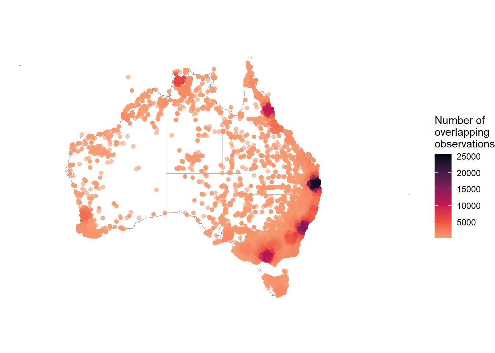
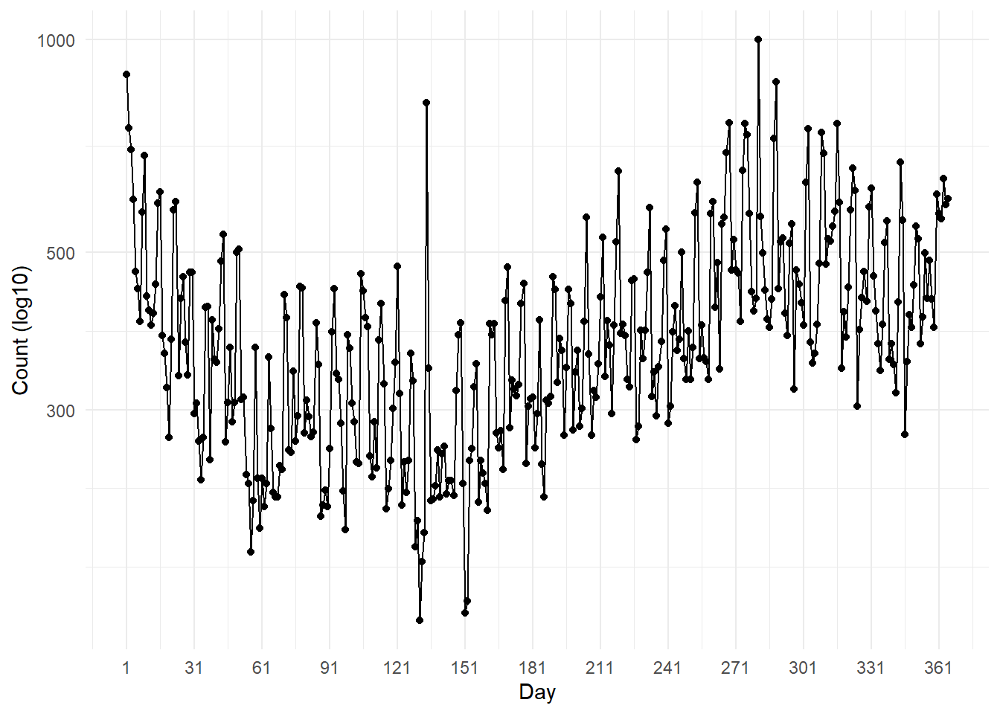

# packages
library(galah)
library(dplyr)
library(ggplot2)
library(tidyr)
library(janitor)
galah_config(email = "your-email-here") # ALA-registered email
birds <- galah_call() |>
filter(doi == "https://doi.org /10.26197/ala.75b1f2a4-eed2-4eaa-8381-b32de8994c85") |>
atlas_occurrences()2 Summarise
In the previous chapter, we learned how to get an overview of our data’s structure, including the number of rows, the columns present, and any missing data. In this chapter, we will focus on summarising ecological data across three key domains: taxonomic, spatial, and temporal. Summarising data can provide insight into the scope and variation in our dataset, and help in evaluating its suitability for our analysis.
Where possible, we will use the galah package to summarise data. galah can summarise data on the server-side before they are downloaded, enabling you to filter or summarise the data without needing to have them on your local computer first. We will demonstrate how to use galah (prior to download) or other suitable cleaning packages (after a download) when both options are available.
2.0.1 Prerequisites
In this chapter, we will use occurrence records for Alcedinidae (Kingfishers) in 2023 from the ALA.

2.1 Taxonomic
2.1.1 Counts
Prior to downloading data, it can be useful to see a taxonomic breakdown of the occurrence records that exist for our query. For example, with the Alcedinidae dataset, we can count the total number of occurrence records…
galah_call() |>
identify("alcedinidae") |>
filter(year == 2022) |>
atlas_counts()# A tibble: 1 × 1
count
<int>
1 142020…or group by a taxonomic rank like genus…
galah_call() |>
identify("alcedinidae") |>
filter(year == 2022) |>
group_by(genus) |>
atlas_counts()# A tibble: 5 × 2
genus count
<chr> <int>
1 Dacelo 93208
2 Todiramphus 41425
3 Ceyx 6014
4 Tanysiptera 903
5 Syma 349…or species.
galah_call() |>
identify("alcedinidae") |>
filter(year == 2022) |>
group_by(species) |>
atlas_counts()# A tibble: 10 × 2
species count
<chr> <int>
1 Dacelo novaeguineae 85751
2 Todiramphus sanctus 26226
3 Todiramphus macleayii 10039
4 Dacelo leachii 7451
5 Ceyx azureus 5343
6 Todiramphus pyrrhopygius 2365
7 Tanysiptera sylvia 903
8 Ceyx pusillus 671
9 Syma torotoro 349
10 Todiramphus chloris 29Our results show that the large majority of records are of Dacelo novaeguineae (aka the Laughing Kookaburra).
You can get the same summaries after downloading the data locally using dplyr or janitor.
# Using our pre-downloaded dataset
birds |>
group_by(genus) |>
count() |>
arrange(desc(-n))# A tibble: 6 × 2
# Groups: genus [6]
genus n
<chr> <int>
1 <NA> 116
2 Syma 340
3 Tanysiptera 886
4 Ceyx 5906
5 Todiramphus 40892
6 Dacelo 92695birds |>
group_by(species) |>
count() |>
arrange(desc(-n))# A tibble: 11 × 2
# Groups: species [11]
species n
<chr> <int>
1 Todiramphus chloris 29
2 Syma torotoro 340
3 Ceyx pusillus 658
4 Tanysiptera sylvia 886
5 Todiramphus pyrrhopygius 2322
6 <NA> 2859
7 Ceyx azureus 5248
8 Dacelo leachii 7264
9 Todiramphus macleayii 9866
10 Todiramphus sanctus 25938
11 Dacelo novaeguineae 85425# Using our pre-downloaded dataset
birds |>
tabyl(genus) |>
adorn_pct_formatting() genus n percent valid_percent
Ceyx 5906 4.2% 4.2%
Dacelo 92695 65.8% 65.9%
Syma 340 0.2% 0.2%
Tanysiptera 886 0.6% 0.6%
Todiramphus 40892 29.0% 29.1%
<NA> 116 0.1% -birds |>
tabyl(species) |>
adorn_pct_formatting() species n percent valid_percent
Ceyx azureus 5248 3.7% 3.8%
Ceyx pusillus 658 0.5% 0.5%
Dacelo leachii 7264 5.2% 5.3%
Dacelo novaeguineae 85425 60.7% 61.9%
Syma torotoro 340 0.2% 0.2%
Tanysiptera sylvia 886 0.6% 0.6%
Todiramphus chloris 29 0.0% 0.0%
Todiramphus macleayii 9866 7.0% 7.2%
Todiramphus pyrrhopygius 2322 1.6% 1.7%
Todiramphus sanctus 25938 18.4% 18.8%
<NA> 2859 2.0% -
2.2 Spatial
2.2.1 Counts by region
It can be useful to summarise occurrence numbers by a specific region. With galah, you can do this summarising prior to downloading occurrence records.
For example, you might wish to summarise your data by state/territory. We can search for the correct field to use in galah, determining that field ID cl22 contains “Australian States and Territories” and seems to suit our needs best.
search_all(fields, "states")# A tibble: 6 × 3
id description type
<chr> <chr> <chr>
1 cl2013 ASGS Australian States and Territories fields
2 cl22 Australian States and Territories fields
3 cl927 States including coastal waters fields
4 cl10925 PSMA States (2016) fields
5 cl11174 States and Territories 2021 fields
6 cl110925 PSMA States - Abbreviated (2016) fieldsNow we can use the field ID cl22 to group our counts.
galah_call() |>
identify("alcedinidae") |>
filter(year == 2022) |>
group_by(cl22) |>
atlas_counts()# A tibble: 8 × 2
cl22 count
<chr> <int>
1 Queensland 51030
2 New South Wales 39038
3 Victoria 23941
4 Northern Territory 9872
5 Western Australia 7860
6 Australian Capital Territory 3518
7 South Australia 2504
8 Tasmania 2502We can also group our counts by state/territory and a taxonomic rank like genus.
galah_call() |>
identify("alcedinidae") |>
filter(year == 2022) |>
group_by(cl22, genus) |>
atlas_counts()# A tibble: 26 × 3
cl22 genus count
<chr> <chr> <int>
1 Queensland Dacelo 27383
2 Queensland Todiramphus 19693
3 Queensland Ceyx 2633
4 Queensland Tanysiptera 902
5 Queensland Syma 347
6 New South Wales Dacelo 29910
7 New South Wales Todiramphus 7634
8 New South Wales Ceyx 1483
9 Victoria Dacelo 19655
10 Victoria Todiramphus 3762
# ℹ 16 more rowsOur results show that we have the most records in Queensland and New South Wales.
You can get the same summaries after downloading the data locally with dplyr and janitor.
# Using our pre-downloaded dataset
birds |>
group_by(cl22) |>
count() |>
arrange(desc(n))# A tibble: 9 × 2
# Groups: cl22 [9]
cl22 n
<chr> <int>
1 Queensland 50295
2 New South Wales 38868
3 Victoria 24075
4 Northern Territory 9789
5 Western Australia 7654
6 Australian Capital Territory 3519
7 South Australia 2474
8 Tasmania 2443
9 <NA> 1718birds |>
group_by(cl22, species) |>
count() |>
arrange(desc(n))# A tibble: 59 × 3
# Groups: cl22, species [59]
cl22 species n
<chr> <chr> <int>
1 New South Wales Dacelo novaeguineae 29826
2 Queensland Dacelo novaeguineae 23920
3 Victoria Dacelo novaeguineae 19786
4 Queensland Todiramphus sanctus 10254
5 New South Wales Todiramphus sanctus 6766
6 Queensland Todiramphus macleayii 6360
7 Western Australia Dacelo novaeguineae 3964
8 Victoria Todiramphus sanctus 3762
9 Northern Territory Todiramphus macleayii 3138
10 Queensland Dacelo leachii 3124
# ℹ 49 more rows# Using our pre-downloaded dataset
birds |>
tabyl(cl22) |>
adorn_pct_formatting() cl22 n percent valid_percent
Australian Capital Territory 3519 2.5% 2.5%
New South Wales 38868 27.6% 27.9%
Northern Territory 9789 7.0% 7.0%
Queensland 50295 35.7% 36.2%
South Australia 2474 1.8% 1.8%
Tasmania 2443 1.7% 1.8%
Victoria 24075 17.1% 17.3%
Western Australia 7654 5.4% 5.5%
<NA> 1718 1.2% -birds |>
tabyl(cl22, species) |>
adorn_pct_formatting() cl22 Ceyx azureus Ceyx pusillus Dacelo leachii
Australian Capital Territory 4700.0% 0.0% 0.0%
New South Wales 146700.0% 0.0% 0.0%
Northern Territory 93000.0% 11300.0% 304200.0%
Queensland 202600.0% 53700.0% 312400.0%
South Australia 200.0% 0.0% 0.0%
Tasmania 2100.0% 0.0% 0.0%
Victoria 51700.0% 0.0% 0.0%
Western Australia 16300.0% 0.0% 106000.0%
<NA> 7500.0% 800.0% 3800.0%
Dacelo novaeguineae Syma torotoro Tanysiptera sylvia Todiramphus chloris
283600.0% 0.0% 0.0% 0.0%
2982600.0% 0.0% 0.0% 800.0%
0.0% 0.0% 0.0% 0.0%
2392000.0% 33800.0% 88500.0% 100.0%
184900.0% 0.0% 0.0% 0.0%
240200.0% 0.0% 0.0% 0.0%
1978600.0% 0.0% 0.0% 0.0%
396400.0% 0.0% 0.0% 1300.0%
84200.0% 200.0% 100.0% 700.0%
Todiramphus macleayii Todiramphus pyrrhopygius Todiramphus sanctus NA_
0.0% 0.0% 63600.0% 0.0%
33300.0% 24700.0% 676600.0% 22100.0%
313800.0% 74600.0% 145300.0% 36700.0%
636000.0% 74400.0% 1025400.0% 210600.0%
0.0% 26800.0% 35200.0% 300.0%
0.0% 0.0% 2000.0% 0.0%
0.0% 800.0% 376200.0% 200.0%
0.0% 30800.0% 211800.0% 2800.0%
3500.0% 100.0% 57700.0% 13200.0%
2.2.2 Maps
We can use maps to visualise summaries of our data. To illustrate, we will use the sf package to handle spatial data, and the ozmaps package to get maps of Australia (as vector data).
library(sf)
library(ozmaps)There are a few occurrence records in our birds dataset that are outside of Australia. For simplicity, we will filter our data to records within Australia’s land mass.
# filter records to within Australia
birds_filtered <- birds |>
filter(decimalLongitude > 110,
decimalLongitude < 155,
decimalLatitude > -45,
decimalLatitude < -10)Our first step is to get a map of Australia from the ozmaps package. We will transform its Coordinate Reference System (CRS)1 projection to EPSG:4326 to match the CRS projection of ALA data2.
# Get map of australia, and transform projection
aus <- ozmaps::ozmap_states |>
st_transform(crs = st_crs(4326))Then we can plot our occurrence points onto our map.
Point maps are quick and effective ways to visually inspect the locations of your occurrence records. Here we have also adjusted the size and alpha values to make the points larger and more transparent.
# Plot the observations on our map of Australia
ggplot() +
geom_sf(data = aus,
colour = "grey60",
fill = "white") +
geom_point(data = birds_filtered,
aes(x = decimalLongitude,
y = decimalLatitude),
colour = "#428afe",
size = 1.8,
alpha = 0.6) +
theme_void()We can use the ggpointdensity package to visualise locations with many overlapping occurrences. With over 40,000 points plotted on our map, geom_pointdensity() allows us to see areas with higher densities of observations.
library(ggpointdensity)
library(viridis) # colour palette
ggplot() +
geom_sf(data = aus,
colour = "grey60",
fill = "white") +
geom_pointdensity(data = birds_filtered,
aes(x = decimalLongitude,
y = decimalLatitude),
size = 1.8,
alpha = 0.6) +
scale_colour_viridis_c(option = "F", # palette
end = .8, # final light colour value
direction = -1) + # reverse light-to-dark
guides(
colour = guide_colourbar(
title = "Number of\noverlapping\nobservations")
) +
theme_void()
It can also be useful to create a collection of maps grouped by a specific variable (i.e., facetted). Here is one taxonomic example, grouping by species with facet_wrap(). Visualising by groups can reveal spatial trends, and also help you determine whether there is enough data for each species or taxonomic group for your later analyses.
ggplot() +
geom_sf(data = aus,
colour = "grey60",
fill = "white") +
geom_point(data = birds_filtered |>
drop_na(species), # remove NA values
aes(x = decimalLongitude,
y = decimalLatitude,
colour = species),
size = 1.8,
alpha = 0.6) +
pilot::scale_color_pilot() +
theme_void() +
facet_wrap( ~ species) +
theme(legend.position = "none")2.3 Temporal
2.3.1 Counts by time scales
Understanding the distribution of when observations are recorded can reveal seasonal trends among species. Checking this distribution can also help you determine whether you have enough data to infer patterns over different time spans—such as a week, month, year, decade, or even century—or whether your inferences about temporal trends are limited by the available data.
Year
For example, an easy first summary is to know the number of records in each year. You can do this in galah prior to downloading data. We can search for the correct field to use in galah, determining that field ID year seems to suit our needs best.
search_all(fields, "year")# A tibble: 8 × 3
id description type
<chr> <chr> <chr>
1 year Year fields
2 raw_year Year (unprocessed) fields
3 endDayOfYear End Day Of Year fields
4 startDayOfYear Start Day Of Year fields
5 occurrenceYear Date (by year) fields
6 raw_endDayOfYear <NA> fields
7 raw_startDayOfYear <NA> fields
8 namePublishedInYear Name Published In Year fieldsNow we can use the field ID year to group our counts, returning years 2016 and onwards.
galah_call() |>
identify("alcedinidae") |>
filter(year > 2016) |>
group_by(year) |>
atlas_counts()# A tibble: 8 × 2
year count
<chr> <int>
1 2023 172941
2 2022 142020
3 2021 129155
4 2020 109404
5 2018 96285
6 2019 94647
7 2017 79178
8 2024 62306Alternatively, you can use the lubridate package to summarise after downloading counts.
We’ll convert our column eventDate to a date class in R. Then we can extract relevant date data…
# Using our pre-downloaded dataset
library(lubridate)
birds_date <- birds |>
mutate(eventDate = date(eventDate), # convert to date
year = year(eventDate), # extract year
month = month(eventDate, # extract month
label = TRUE))
birds_date |>
select(scientificName, eventDate, year, month)# A tibble: 140,835 × 4
scientificName eventDate year month
<chr> <date> <dbl> <ord>
1 Dacelo (Dacelo) novaeguineae 2022-04-19 2022 Apr
2 Dacelo (Dacelo) novaeguineae 2022-12-25 2022 Dec
3 Dacelo (Dacelo) novaeguineae 2022-10-27 2022 Oct
4 Dacelo (Dacelo) novaeguineae 2022-01-23 2022 Jan
5 Dacelo (Dacelo) novaeguineae 2022-11-09 2022 Nov
6 Todiramphus (Todiramphus) sanctus 2022-02-05 2022 Feb
7 Todiramphus (Todiramphus) sanctus 2022-11-24 2022 Nov
8 Dacelo (Dacelo) novaeguineae 2022-10-01 2022 Oct
9 Dacelo (Dacelo) novaeguineae 2022-03-21 2022 Mar
10 Dacelo (Dacelo) novaeguineae 2022-08-14 2022 Aug
# ℹ 140,825 more rows…and summarise using dplyr or janitor.
# by year
birds_date |>
group_by(year) |>
count()# A tibble: 3 × 2
# Groups: year [3]
year n
<dbl> <int>
1 2021 4
2 2022 140827
3 NA 4# by month
birds_date |>
group_by(month) |>
count() |>
arrange(-desc(month))# A tibble: 13 × 2
# Groups: month [13]
month n
<ord> <int>
1 Jan 14772
2 Feb 9300
3 Mar 8845
4 Apr 9492
5 May 8598
6 Jun 9073
7 Jul 10703
8 Aug 11954
9 Sep 13421
10 Oct 16127
11 Nov 14451
12 Dec 14095
13 <NA> 4# by year
birds_date |>
tabyl(year) |>
adorn_pct_formatting() year n percent valid_percent
2021 4 0.0% 0.0%
2022 140827 100.0% 100.0%
NA 4 0.0% -# by month
birds_date |>
tabyl(month) |>
arrange(desc(month)) month n percent valid_percent
Dec 14095 1.000817e-01 0.10008450
Nov 14451 1.026094e-01 0.10261235
Oct 16127 1.145099e-01 0.11451314
Sep 13421 9.529591e-02 0.09529862
Aug 11954 8.487947e-02 0.08488188
Jul 10703 7.599673e-02 0.07599889
Jun 9073 6.442291e-02 0.06442474
May 8598 6.105017e-02 0.06105190
Apr 9492 6.739802e-02 0.06739993
Mar 8845 6.280399e-02 0.06280577
Feb 9300 6.603472e-02 0.06603660
Jan 14772 1.048887e-01 0.10489168
<NA> 4 2.840203e-05 NA
Line plots
Another way to summarise temporal data is using line plots to visualise trends at different time scales over one or more years.
There are a few records that seem to be from 2021 despite downloading data for 20223. For simplicity, we’ll filter them out.
# filter dataset to 2022 only
birds_day <- birds_date |>
filter(year(eventDate) == 2022) |>
mutate(day = yday(eventDate))Now we can group our records by each day of the year, and summarise the record count for each day…
birds_day <- birds_day |>
group_by(day) |>
summarise(count = n())
birds_day# A tibble: 365 × 2
day count
<dbl> <int>
1 1 892
2 2 746
3 3 692
4 4 595
5 5 461
6 6 441
7 7 398
8 8 572
9 9 683
10 10 434
# ℹ 355 more rows…which we can visualise as a line plot. There are huge fluctuations in our daily count data (from near zero to nearly 1000 observations), so to make the plot easier to read, we can use a log10 scale.
ggplot(birds_day, aes(x = day, y = count)) +
geom_line() + # Add lines
geom_point() + # Add points
labs(x = "Day", y = "Count (log10)") +
scale_x_continuous(breaks = seq(1, 365, by = 30)) +
scale_y_log10() + # Set logarithmic scale for y-axis
theme_minimal() # Set a minimal theme
The same method above can be used to group record counts by week4.
Code
birds_week <- birds_date |>
filter(year(eventDate) == 2022) |>
mutate(
week = week(eventDate)) |>
group_by(week) |>
summarise(count = n())
ggplot(birds_week, aes(x = week, y = count)) +
geom_line() + # Add lines
geom_point() + # Add points
labs(x = "Week", y = "Count") +
scale_x_continuous(breaks = seq(1, 52, by = 4)) +
theme_minimal() # Set a minimal themeOur temporal plots show that occurrences generally drop in the earlier months, then inflate in the later months of the year.
2.4 Summary
In this chapter we have provided a few ways to summarise your data taxonomically, spatially, and temporally. We hope that these code chunks will help you in summarising your own data. Summarising and visualising data are some of the most useful ways to spot errors for data cleaning. As such, we suggest using these tools often though the course of your analysis.
In the next part of this book, we will tackle these issues to clean your dataset.
The Coordinate Reference System (CRS) determines how to display our shape of Australia, which exists on a spherical globe (the Earth), onto a flat surface (our map).↩︎
Data from the ALA use EPSG:4326 (also known as “WGS84”) as the Coordinate Reference System. Transforming our map to the same projection of our data ensures the points are plotted in their actual locations on the map.↩︎
This is due to timezone conversion when the ALA standardises its data. There are several timezones across Australia, so although these points might have been in 2022, once converted they fell outside of 2022!↩︎
Notice, though, that we’ve ommitted the log scale because grouping by week has less variation in counts than by day (above).↩︎